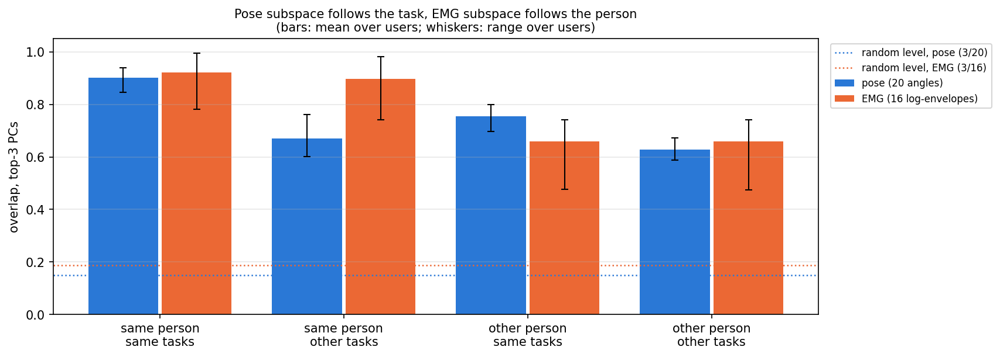
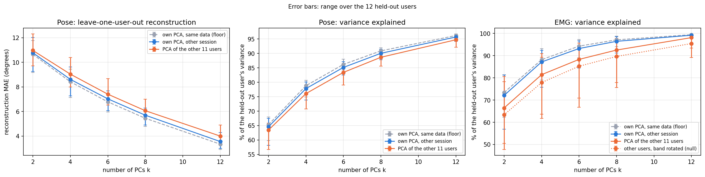
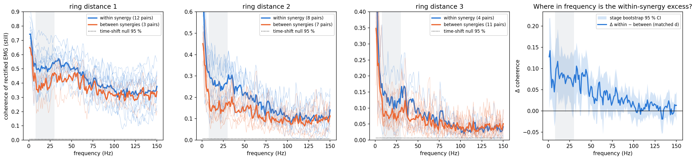
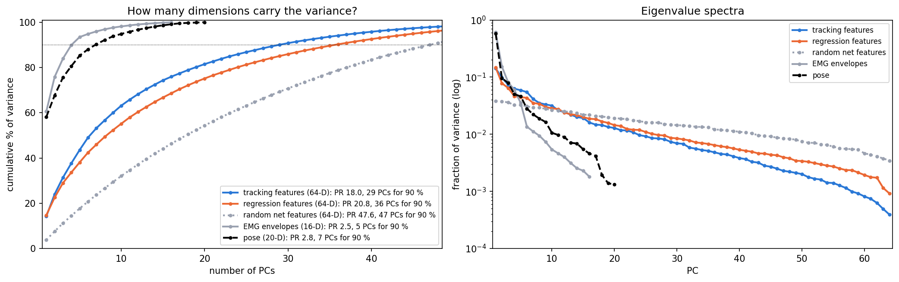
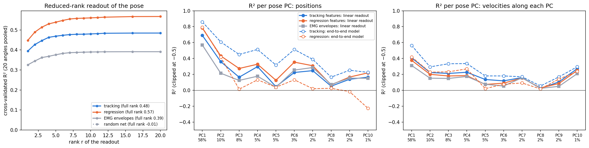

semg2pose · neuro track
Getting Neurosciency
¿El sistema nervioso ya redujo las dimensiones de la mano antes de que nosotros intentáramos comprimirlas?
Did the nervous system already reduce the dimensions of the hand before we tried to compress them?
En la guía vimos que la postura de la mano se describe con pocas dimensiones (sinergias) y que un decodificador solo lee unas pocas desde la EMG. La pregunta de neurociencia es dónde nace esa simplicidad. Hay un debate clásico en control motor:
In the guide we saw that hand posture is described by a few dimensions (synergies) and that a decoder reads only a few of them from the EMG. The neuroscience question is where that simplicity comes from. There is a classic debate in motor control:
El cerebro y la médula mandan pocas órdenes compartidas a grupos de músculos. Así simplifican el control de una mano con decenas de músculos.
The brain and spinal cord send a few shared commands to groups of muscles, which simplifies controlling a hand with dozens of muscles.
Los músculos se controlan por separado, pero la anatomía (tendones compartidos) y lo que pide la tarea hacen que el movimiento resultante parezca de pocas dimensiones.
Muscles are controlled independently, but anatomy (shared tendons) and task demands make the resulting movement look low-dimensional.
Con una persona y 16 electrodos no lo vamos a resolver. Esta página explora, dice qué resultados aguantan y cuáles no, y diseña las pruebas que el dataset completo (193 personas) podría hacer. Es el material de partida para un póster en la Bernstein Conference.
With one person and 16 electrodes we will not settle it. This page explores, says which results hold up and which do not, and designs the tests the full dataset (193 people) could run. It is the starting material for a Bernstein Conference poster.
Crosstalk, subespacio de comunicación, alineación, sinergias, transferencia. Dos resultados corregidos tras añadir controles (capítulos 2 y 3).
Crosstalk, communication subspace, alignment, synergies, transfer. Two results corrected after adding controls (chapters 2 and 3).
¿La pose comparte subespacio entre personas y la EMG no?
Is the pose subspace shared across people while the EMG is not?
¿Hay un mando neural compartido a 8-30 Hz dentro de cada sinergia?
Is there shared 8-30 Hz neural drive within each synergy?
¿Su representación interna también tiene pocas dimensiones y está alineada con las sinergias?
Is its internal representation also low-dimensional and aligned with the synergies?
H1 · capítulo 1
H1 · chapter 1
La trampa del crosstalk
The crosstalk trap
Si la EMG tiene pocas dimensiones, ¿es porque el cerebro manda pocas órdenes? No tan rápido. Dos electrodos vecinos oyen en parte las mismas motor units (la electricidad se propaga por el tejido: crosstalk). Así que los 16 canales estarían correlacionados aunque cada músculo se controlara por separado.
If the EMG is low-dimensional, is it because the brain sends few commands? Not so fast. Two neighbouring electrodes partly hear the same motor units (electricity spreads through tissue: crosstalk). So the 16 channels would be correlated even if each muscle were controlled independently.
Truco: medir dos cosas con la misma regla. La señal cruda (120-250 Hz) solo se parece entre electrodos si comparten fuentes, porque los disparos de motor units distintas no van sincronizados: eso mide el crosstalk. Las envolventes (cuánta actividad hay) se parecen también si los músculos suben y bajan juntos porque reciben la misma orden.
Trick: measure two things with the same ruler. The raw signal (120-250 Hz) only looks alike across electrodes if they share sources, because spikes of different motor units are not synchronised: that measures crosstalk. The envelopes (how much activity) also look alike when muscles rise and fall together because they receive the same command.
Correlación entre los 16 electrodos
Correlation between the 16 electrodes
Datos reales. Cambia entre señal cruda y envolventes. Pasa el ratón por una celda.
Real data. Switch between raw signal and envelopes. Hover over a cell.
Resultado: la señal cruda tiene ~7,5 dimensiones efectivas; las envolventes, ~2,7. La actividad se co-modula mucho más de lo que explica el crosstalk: H1 apoyada. Pero gran parte es un único componente global (esfuerzo total), y podría incluir derivas lentas compartidas como el contacto del electrodo.
Result: the raw signal has ~7.5 effective dimensions; the envelopes ~2.7. Activity is co-modulated far beyond what crosstalk explains: H1 supported. But much of it is a single global component (overall effort), which could include slow shared drifts such as electrode contact.
H2 · capítulo 2
H2 · chapter 2
El subespacio de comunicación
The communication subspace
Imagina que la EMG solo pudiera hablarle a la mano a través de r cables. Un decodificador normal usa todos los cables que quiera (80 entradas → 20 ángulos). La regresión de rango reducido (RRR) obliga a pasar por r. Si con 3 cables ya funciona casi igual, la información útil viaja por un canal estrecho. Semedo y colegas (2019) usaron este método para mostrar que dos áreas de la corteza visual se hablan por un “subespacio de comunicación” de pocas dimensiones.
Imagine the EMG could only talk to the hand through r wires. A normal decoder uses as many wires as it likes (80 inputs → 20 angles). Reduced-rank regression (RRR) forces it through r. If 3 wires already work almost as well, the useful information travels through a narrow channel. Semedo and colleagues (2019) used this method to show that two visual cortical areas talk through a low-dimensional “communication subspace”.
¿Cuántos cables hacen falta?
How many wires are needed?
R² con validación cruzada. Azul: los r cables los elige la EMG (RRR). Naranja: los r cables son las primeras r PCs de la pose (el bottleneck PCA del proyecto).
Cross-validated R². Blue: the r wires are chosen using the EMG (RRR). Orange: the r wires are the first r pose PCs (the project’s PCA bottleneck).
Resultado: midiendo en grados, con rango 3 se obtiene el 90 % de lo que da el decodificador sin restricción (rango 2 para velocidad), y el bottleneck PCA necesita solo una dimensión más.
Result: measured in degrees, rank 3 gives 90 % of what the unrestricted decoder achieves (rank 2 for velocity), and the PCA bottleneck needs only one more dimension.
En grados, la PC1 tiene más de la mitad de la varianza, así que “con 3 basta” dice en parte “la PC1 domina la escala”. Con las 8 primeras PCs pesando igual (botón de arriba) hacen falta 6 de 8 dimensiones. La decodificación es real (R² 0,17 frente a 0,01 con una entrada nula), pero la información está repartida. Veredicto: sirve para la métrica del benchmark (elegir k), no como afirmación neural de un canal de 3 dimensiones.
In degrees, PC1 holds more than half the variance, so “3 is enough” partly says “PC1 dominates the scale”. With the first 8 PCs weighted equally (button above) it takes 6 of 8 dimensions. The decoding is real (R² 0.17 versus 0.01 with a null input), but the information is spread out. Verdict: holds for the benchmark metric (choosing k), not as a neural claim of a 3-D channel.
H3 · capítulo 3
H3 · chapter 3
¿Los cables son las sinergias de la pose?
Are the wires the pose synergies?
La RRR elige las direcciones de la pose que la EMG predice mejor. La PCA elige las direcciones en las que la pose varía más (las sinergias). ¿Son las mismas? Medimos cuánto se solapan los dos subespacios: 1 = idénticos, r/20 = como al azar.
RRR picks the pose directions the EMG predicts best. PCA picks the directions in which the pose varies most (the synergies). Are they the same? We measure how much the two subspaces overlap: 1 = identical, r/20 = like random.
Solapamiento y composición
Overlap and composition
Izquierda: solapamiento según la dimensión; azul = EMG real, gris = entrada nula. Derecha: de qué PCs está hecha cada dirección decodificable (más oscuro = más peso).
Left: overlap by dimension; blue = real EMG, grey = null input. Right: which PCs each decodable direction is made of (darker = more weight).
Resultado aparente: solapamiento 0,8-0,9 a partir de r = 3.
Apparent result: overlap 0.8-0.9 from r = 3 on.
La curva gris es el mismo análisis con una entrada nula (la EMG desplazada en el tiempo, sin relación instante a instante con la pose): ya da 0,98 en r = 1 y 0,5-0,8 después. Una regresión medida en grados se inclina hacia las direcciones de mucha varianza sea cual sea la entrada. La EMG real queda solo un poco por encima. Veredicto: no informativo tal como se midió. Hace falta medir en unidades blanqueadas y contra una distribución nula (lo hace el análisis de la red, dirección C). La evidencia más limpia sobre qué ve la EMG es el R² por PC: la PC1 muy bien, las demás poco.
The grey curve is the same analysis with a null input (EMG shifted in time, with no moment-to-moment link to the pose): it already gives 0.98 at r = 1 and 0.5-0.8 beyond. A regression measured in degrees leans towards high-variance directions whatever the input. The real EMG is only a little above it. Verdict: not informative as measured. It needs whitened units and a null distribution (the network analysis, direction C, does this). The cleanest evidence about what the EMG sees is the per-PC R²: PC1 very well, the others weakly.
H4 · capítulo 4
H4 · chapter 4
Sinergias musculares, y un resultado que no aguantó
Muscle synergies, and a result that did not survive
Las sinergias musculares se buscan con NMF: la EMG se escribe como suma de unos pocos patrones espaciales (qué electrodos trabajan juntos) por su activación en el tiempo. Cinco sinergias explican ~90 % de la EMG. Si el cerebro mandara la mano con esas 5 órdenes, sus activaciones deberían predecir la pose tan bien como los 16 canales.
Muscle synergies are found with NMF: the EMG is written as a sum of a few spatial patterns (which electrodes work together) times their activation over time. Five synergies explain ~90 % of the EMG. If the brain drove the hand with those 5 commands, their activations should predict the pose as well as the 16 channels.
16 canales contra 5 sinergias
16 channels versus 5 synergies
R² al decodificar cada PC de la pose. Pasa el ratón por las barras.
R² when decoding each pose PC. Hover over the bars.
Resultado: las 5 sinergias conservan solo la mitad de la información de la pose: H4 no apoyada. La estructura que domina la señal muscular no es todo lo que necesita la pose.
Result: the 5 synergies keep only half of the pose information: H4 not supported. The structure that dominates the muscle signal is not everything the pose needs.
Primera idea: la mayor parte de la EMG sería co-contracción (flexores y extensores a la vez, para dar rigidez), que no mueve nada. Un primer análisis lo parecía confirmar: las direcciones que usa el decodificador solo contenían el 7 % de la varianza de la EMG.
First idea: most of the EMG would be co-contraction (flexors and extensors together, to stiffen the hand), which moves nothing. A first analysis seemed to confirm it: the directions the decoder uses held only 7 % of the EMG variance.
Pero los pesos de una regresión apuntan por construcción a direcciones de poca varianza (la regresión divide por la covarianza de las entradas). Al comprobarlo desde el otro lado, prediciendo cada componente de la EMG a partir del movimiento, el movimiento explica más o menos lo mismo de todos (R² ≈ 0,2-0,3). Lo que sí aguanta: solo ~1/4 de la varianza de la EMG lo explica el movimiento de los dedos. El resto (co-contracción, muñeca, fuerza sin movimiento, ruido) no se puede separar con estos datos.
But regression weights point to low-variance directions by construction (a regression divides by the input covariance). Checking from the other side, predicting each EMG component from the movement, the movement explains roughly the same share of every component (R² ≈ 0.2-0.3). What does hold: only ~1/4 of the EMG variance is explained by finger movement. The rest (co-contraction, wrist, force without movement, noise) cannot be separated with this data.
Cuánto explica el movimiento de cada componente de la EMG
How much of each EMG component the movement explains
H5 · capítulo 5
H5 · chapter 5
¿Sinergias compartidas entre tareas y manos?
Synergies shared across tasks and hands?
Si las sinergias son un vocabulario neural fijo, deberían reutilizarse en tareas distintas. Las aprendemos con todas las tareas menos una y las probamos en la que falta. Y comparamos las de la mano izquierda con las de la derecha.
If synergies are a fixed neural vocabulary, they should be reused across tasks. We learn them on all tasks but one and test them on the missing one. And we compare left-hand and right-hand synergies.
Mano izquierda contra derecha
Left hand versus right hand
Cada anillo es la muñeca (0-7 palma, 8-15 dorso). Naranja: izquierda. Azul: derecha.
Each ring is the wrist (0-7 palm, 8-15 back). Orange: left. Blue: right.
¿Sirven en una tarea nueva?
Do they work on a new task?
Varianza explicada (VAF) en la tarea que falta: con sus propias sinergias (gris) y con las aprendidas en las demás (azul).
Variance accounted for (VAF) on the held-out task: with its own synergies (grey) and with those learned on the others (blue).
Resultado: se transfieren bien (0,91 frente a 0,95) y son casi idénticas en las dos manos (0,98 frente a 0,60 al azar). compatible, no concluyente: la anatomía (qué músculo hay bajo cada electrodo) predice exactamente lo mismo.
Result: they transfer well (0.91 versus 0.95) and are nearly identical on both hands (0.98 versus 0.60 by chance). consistent, not conclusive: anatomy (which muscle lies under each electrode) predicts exactly the same.
capítulo 6
chapter 6
Qué dicen los datos (por ahora, tras los controles)
What the data say (so far, after controls)
| hipótesis | hypothesis | estado | status | |
|---|---|---|---|---|
| H1 | la EMG se co-modula más allá del crosstalk | EMG is co-modulated beyond crosstalk | apoyadasupported | |
| H2 | EMG → pose pasa por un subespacio de ~3 dimensiones | EMG → pose flows through a ~3-D subspace | solo en grados (6 de 8 con igual peso)only in degrees (6 of 8 with equal weight) | |
| H3 | ese subespacio son las sinergias posturales | that subspace is the postural synergies | no informativo (falla el control)not informative (fails the control) | |
| A | la pose comparte subespacio entre personas; la EMG no | pose shares a subspace across people; EMG does not | apoyada (12 personas)supported (12 people) | |
| B | mando neural compartido dentro de cada sinergia (coherencia) | shared neural drive within each synergy (coherence) | exceso real, sin pico 8-30 Hzreal excess, no 8-30 Hz bump | |
| C | la información de la pose no está en la parte dominante (EMG y red) | pose information is not in the dominant part (EMG and network) | apoyadasupported | |
| H4 | 5 sinergias musculares llevan toda la información de la pose | 5 muscle synergies carry all the pose information | no apoyadanot supported | |
| H5 | sinergias compartidas entre tareas y manos | synergies shared across tasks and hands | no concluyentenot conclusive |
La historia que sobrevive: las sinergias de la pose se comparten entre personas (y siguen a la tarea), mientras que los patrones de EMG son de cada persona. Y la estructura dominante de la señal muscular (las sinergias que más varianza explican, y también la parte dominante de la red de Meta) no es donde está la mayor parte de la información de la postura. Para el proyecto: un latente de pose aprendido con muchas personas se reutiliza casi gratis en una nueva; lo que hay que aprender por persona es la correspondencia EMG → latente.
The story that survives: pose synergies are shared across people (and follow the task), while EMG patterns are person-specific. And the dominant structure of the muscle signal (the synergies that explain most of the variance, and also the dominant part of Meta’s network) is not where most of the posture information lives. For the project: a pose latent learned from many people is reused almost for free on a new one; what has to be learned per person is the EMG → latent mapping.
capítulo 7
chapter 7
Otras direcciones
Other directions
Tres preguntas que pueden separar mejor “neural” de “anatómico”, cada una en su propio notebook: cross_user_invariance, intermuscular_coherence y network_internals.
Three questions that can better separate “neural” from “anatomical”, each in its own notebook: cross_user_invariance, intermuscular_coherence and network_internals.
A. Invarianza entre personas
A. Cross-user invariance
Pregunta: ¿las sinergias de la pose son las mismas en personas distintas, mientras que los patrones de EMG cambian con la anatomía y la colocación de la pulsera? Si es así, comprimir la pose ayudaría justo a generalizar a gente nueva. Necesita varias personas: bajamos una parte del dataset completo.
Question: are the pose synergies the same across people, while EMG patterns change with anatomy and band placement? If so, compressing the pose would help precisely with generalizing to new people. It needs several people: we downloaded part of the full dataset.
Datos: 12 personas del dataset completo (4 de validación, 4 de test, 4 de entrenamiento), 13 tareas, ambas manos, 9 horas válidas. Bajamos solo esos archivos (11,5 GB) leyendo el índice del tar con peticiones parciales.
Data: 12 people from the full dataset (4 validation, 4 test, 4 training), 13 tasks, both hands, 9 valid hours. We downloaded only those files (11.5 GB) by reading the tar index with range requests.
| pose | pose | EMG | |
|---|---|---|---|
| solapamiento entre personas (3 PCs) | overlap across people (3 PCs) | 0,80 | 0,66 |
| misma persona, otra sesión | same person, other session | 0,93 | 0,94 |
| control estructurado (dedos cambiados / pulsera girada) | structured null (fingers swapped / band rotated) | 0,65 | 0,63 |
| compartido más allá del control (IC 95 %) | shared beyond the null (95 % CI) | 0,47 [0,34, 0,61] | 0,07 [−0,04, 0,20] |
La pose gana a la EMG en las 12 personas. Una base PCA de pose aprendida con las otras 11 cuesta solo 0,2-0,45° más de error en una persona nueva (con k = 4: 9,0° frente a 8,6° usando su propia base). Y lo más llamativo: el subespacio de la pose sigue a la tarea; el de la EMG sigue a la persona.
Pose beats EMG in all 12 people. A pose PCA basis learned from the other 11 costs only 0.2-0.45° extra error on a new person (k = 4: 9.0° versus 8.6° with their own basis). And most striking: the pose subspace follows the task; the EMG subspace follows the person.


Cuidado: parte de lo compartido en la pose lo impone que todos hicieron los mismos gestos instruidos. No podemos separar anatomía de colocación de la pulsera. El rango 3 decodificable por persona está medido en grados (mismo sesgo que H2/H3).
Careful: part of the pose sharing is imposed by everyone doing the same instructed gestures. We cannot separate anatomy from band placement. The per-person decodable rank of 3 is measured in degrees (same bias as H2/H3).
B. Coherencia intermuscular
B. Intermuscular coherence
Pregunta: un mando neural compartido deja una huella: músculos que reciben la misma orden oscilan juntos a 8-30 Hz. El crosstalk no produce esa huella a esas frecuencias. ¿Los electrodos de una misma sinergia son más coherentes entre sí que los de sinergias distintas, a igual distancia?
Question: shared neural drive leaves a fingerprint: muscles receiving the same command oscillate together at 8-30 Hz. Crosstalk does not produce that fingerprint at those frequencies. Are electrodes of the same synergy more coherent with each other than electrodes of different synergies, at the same distance?
Positivo pero ambiguo. Los electrodos de una misma sinergia tienen claramente más coherencia que los de sinergias distintas a la misma distancia: +0,08 [0,02, 0,14], el mayor de las 660 formas posibles de partir el anillo en 4 sectores (p = 0,002). El crosstalk medido no lo explica (su índice apenas difiere: p = 0,25) y aguanta en cada mano por separado.
Positive but ambiguous. Electrodes in the same synergy have clearly more coherence than electrodes in different synergies at the same distance: +0.08 [0.02, 0.14], the largest of all 660 ways of splitting the ring into 4 sectors (p = 0.002). Measured crosstalk does not explain it (its index barely differs: p = 0.25), and it holds for each hand separately.
Pero no hay pico a 8-30 Hz: el exceso es plano de 1 a 45 Hz y desaparece hacia 100 Hz, y sale igual en movimientos lentos y rápidos. No parece el ritmo alfa/beta de un mando cortical. Quedan dos lecturas que estos datos no separan: un mando común de banda ancha a las motoneuronas de cada sector (neural, pero probablemente dentro de un mismo músculo), o crosstalk de motor units compartidas que la señal cruda subestima.
But there is no 8-30 Hz bump: the excess is flat from 1 to 45 Hz, fades by 100 Hz, and is the same in slow and fast movements. It does not look like the alpha/beta rhythm of cortical drive. Two readings remain that this data cannot separate: broadband common input to the motor neurons of each sector (neural, but probably within one muscle), or crosstalk from shared motor units that the raw signal underestimates.

Cuidado: una persona, sin posturas realmente quietas (la mano casi nunca para en estas tareas), pocos pares por distancia. La siguiente prueba más directa: coherencia entre las dos manos, grabadas a la vez, que no pueden compartir crosstalk.
Careful: one person, no truly still postures (the hand almost never stops in these tasks), few pairs per distance. The most direct next test: coherence between the two hands, recorded at the same time, which cannot share crosstalk.
C. Dentro de la red de Meta
C. Inside Meta’s network
Pregunta: tratamos la red entrenada como si fuera una población de neuronas registrada. ¿Su representación interna (64 números a 25 Hz) también tiene pocas dimensiones? ¿Lo que lee de ella está alineado con las sinergias de la pose?
Question: we treat the trained network as if it were a recorded neural population. Is its internal representation (64 numbers at 25 Hz) also low-dimensional? Is what it reads out aligned with the pose synergies?
No es de pocas dimensiones. Los 64 números internos tienen ~18-21 dimensiones efectivas (frente a 2,5 de las envolventes y 2,8 de la pose). El entrenamiento comprime (una red con pesos aleatorios da 48), pero la red expande la entrada unas 7 veces.
It is not low-dimensional. The 64 internal numbers have ~18-21 effective dimensions (versus 2.5 for the envelopes and 2.8 for the pose). Training compresses (a random-weight network gives 48), but the network expands its input about 7-fold.
La pose vive en una parte pequeña que no es la de mucha varianza: con las 3 PCs más grandes de la red se lee poca pose (R² 0,11-0,42); hacen falta 20-32. Solo ~25 % de la varianza interna la explica el movimiento de los dedos, igual que en la EMG. Es el mismo patrón que en H4.
The pose lives in a small part that is not the high-variance part: the network’s 3 largest PCs read little pose (R² 0.11-0.42); 20-32 are needed. Only ~25 % of the internal variance is explained by finger movement, as in the EMG. It is the same pattern as H4.
Lo más útil para el proyecto: una lectura lineal de la red de regresión, ajustada a esta persona, recupera las PCs 3-10 (R² 0,1-0,35) que el modelo completo no logra en esta persona nueva (≈ 0). La información está en el codificador; lo que falla entre personas es el decodificador. Eso apoya un latente compartido más una correspondencia ligera ajustada por persona.
Most useful for the project: a linear readout of the regression network, fitted to this person, recovers PCs 3-10 (R² 0.1-0.35) that the end-to-end model misses on this new person (≈ 0). The information is in the encoder; what fails across people is the decoder. That supports a shared latent plus a light per-person mapping.


Cuidado: una persona, ~10 min; las lecturas lineales se calibran con esta persona (el modelo de Meta no); validación por bloques dentro de cada grabación.
Careful: one person, ~10 min; the linear readouts are calibrated on this person (Meta’s model is not); blocked CV within each recording.
D. Más adelante
D. Later
Coherencia entre las dos manos (grabadas a la vez: no comparten crosstalk); coordinación bimanual; repetir A con más personas y tareas no instruidas (FreeStyle); co-contracción con datos de fuerza, que emg2pose no tiene.
Coherence between the two hands (recorded at the same time: no shared crosstalk); bimanual coordination; repeat A with more people and uninstructed tasks (FreeStyle); co-contraction with force data, which emg2pose does not have.
capítulo 8
chapter 8
Cómo validarlo de verdad
How to validate it properly
- Pre-registrar hipótesis y métricas antes de tocar el dataset completo.
- Pre-register the hypotheses and metrics before touching the full dataset.
- Por persona: repetir H1-H5 en las personas de test. Un origen neural predice el mismo rango de comunicación en todos y un subespacio de pose compartido, aunque la EMG cambie.
- Per person: repeat H1-H5 on the test users. A neural origin predicts the same communication rank for everyone and a shared pose subspace, even if the EMG changes.
- Un control para cada afirmación: crosstalk (señal cruda), barajar canales, desplazar señales en el tiempo.
- A control for every claim: crosstalk (raw signal), channel shuffles, time-shifted signals.
- Una huella que la anatomía no pueda imitar: coherencia a 8-30 Hz entre grupos musculares durante posturas quietas (dirección B).
- A fingerprint anatomy cannot mimic: 8-30 Hz coherence between muscle groups during steady holds (direction B).
- Un control biomecánico: si las sinergias solo reflejan la tarea, las aprendidas en tareas de dedos sueltos deberían fallar en agarres de mano entera. Con 29 tareas y tareas reservadas, eso es una prueba real.
- A biomechanical control: if synergies only reflect the task, those learned on single-finger tasks should fail on whole-hand grasps. With 29 tasks and held-out tasks, this is a real test.
- Volver al proyecto: si el rango de comunicación es ~3-4 en todas las personas y está alineado con las PCs, el bottleneck PCA con k ≈ 4-8 queda justificado por la fisiología, no solo por las curvas de compresión.
- Back to the project: if the communication rank is ~3-4 for everyone and aligned with the PCs, a PCA bottleneck with k ≈ 4-8 is justified by physiology, not only by compression curves.
capítulo 9
chapter 9
Hacia un póster en Bernstein
Towards a Bernstein poster
Borrador en inglés (la conferencia es en inglés). Los huecos entre corchetes dependen del dataset completo. Las fechas de envío hay que mirarlas en la web de la conferencia.
Draft in English. Bracketed gaps depend on the full dataset. Check the submission dates on the conference website.
Shared postural synergies, person-specific muscle patterns: a basis for generalizable EMG-to-pose decoding
Background. Hand posture is low-dimensional (postural synergies), but whether this structure is shared across people, and how it relates to the muscle signal, matters both for theories of motor control and for decoders that must generalize to new users.
Methods. Using wrist sEMG with simultaneous hand tracking (emg2pose), we compared pose and EMG subspaces across 12 people against structured nulls (swapped fingers, rotated band), controlled EMG dimensionality for electrode crosstalk, and analysed the internal representation of a pretrained EMG-to-pose network. [Extend to all held-out participants.]
Results. Pose subspaces were shared across people well beyond the null (0.47 [0.34, 0.61]), EMG subspaces were not (0.07 [−0.04, 0.20]); pose structure followed the task, EMG structure followed the person. A pose basis from 11 people reconstructed a new person within 0.2-0.45° of their own basis. EMG envelopes were co-modulated beyond crosstalk (participation ratio 2.7 vs 7.5), yet their dominant synergies, like the dominant dimensions of the network, carried a minority of the posture information.
Conclusion. A compact pose latent shared across people, with a person-specific mapping from muscle activity, is a principled route to EMG decoders that generalize. [Bottleneck decoding results from Stage 2.]
capítulo 10
chapter 10
Para leer
Reading
- Tresch & Jarc (2009). The case for and against muscle synergies · el debate, corto· the debate, short
- Kutch & Valero-Cuevas (2012). Challenges and new approaches to proving the existence of muscle synergies of neural origin
- Semedo et al. (2019). Cortical areas interact through a communication subspace · el método de RRR· the RRR method
- Kaufman et al. (2014). Cortical activity in the null space · direcciones potentes y nulas· output-potent and null directions
- Farina & Negro (2015). Common synaptic input to motor neurons · la huella de un mando compartido· the fingerprint of shared drive
- d’Avella, Saltiel & Bizzi (2003). Combinations of muscle synergies
- Santello, Flanders & Soechting (1998). Postural hand synergies for tool use
Notebooks: neural_synergies, cross_user_invariance (12 personas; necesita bajar sus datos con scripts/partial_dataset/), intermuscular_coherence, network_internals, en la rama exploratory-analyses. Salvo la dirección A, todo es con una persona: orientativo.
Notebooks: neural_synergies, cross_user_invariance (12 people; download their data with scripts/partial_dataset/), intermuscular_coherence, network_internals, on branch exploratory-analyses. Except direction A, everything uses one person: indicative.